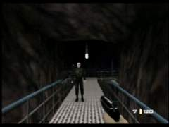
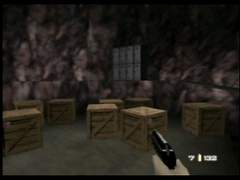
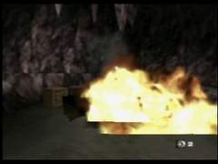
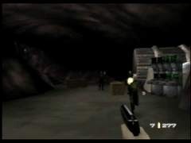
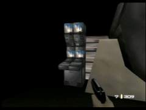
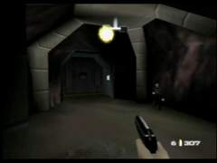
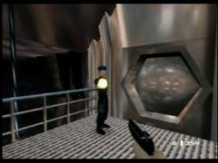
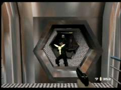

|
| Soluce
Goldeneye : Caverns |
|
| Soluce
Goldeneye : Caverns |
Un Niveau particulier, long, dur, sombre, avec une bonne Musique d'Ambiance. Un Truc pour vous aider : mémorisez bien ce Niveau, ça aide. Dès le Début, occupez-vous des Gardes. Nettoyez tout jusqu'a arriver devant des Scientifiques. Voilà votre 1er Objectif. |
| Détruire
les Pompes Interieures : Secret Agent / 00 Agent |
Faites fuir les Scientifiques, et explosez les 4 Ordinateurs de la Salle. Attention aux Gardes planqués, ils vous prunifieront. Continuez tranquillement votre chemin encuite... |


Arrivé en haut, liquidez bien tout le monde. Direction les Pompes Exterieures par un petit Passage Secret... Dès que vous marchez sur les Pontons Mettaliques, descendez l'Escalier et prenez à gauche pour arriver à une Salle pleine de Caisses avec des munitions. Explosez les Casiers et faufillez-vous... |
 
N'oubliez
pas de ramasser la TONNE de Munitons qui sont dans les Caisses. Une fois
dans le Passage Secret, lorsque vous détruirez les Casiers, vous
serez dans la Salle des Pompes Exterieures. |

| Détruire
les Pompes Exterieures : Secret Agent / 00 Agent |
Dans
cette Salle, tuez à distance garce à l'AR33 les Gardes qui
arrivent alarmés par l'exposion des Casiers. L'un d'eux a une Carte
! Détruisez les 4 Ordinateurs et l'Objectif sera rempli... |
  


Ressortez de la salle par le Sas à coté du Drone Gun, et faites bien le Ménage en n'oubliant aucun Garde VISIBLE. Ci-dessous, les 2 Gardes que l'on voit ont tous les 2 une Carte indispensable ! L'un d'eux a égalemment un RCP-90 alors attention ! On peut les rameuter en shootant les Vitres à coté, c'est plus pratique !! |
 
| Détruire
la Console Principale : Secret Agent / 00 Agent |
| Contacter
Jack Wade par Radio : 00 Agent |
Là c'est dur. Les 2 (Radio et Console) sont dans la meme Piece Minuscule. Si la Radio pete, c'est foutu. Si la Console pete, c'est gagné. Ce qu'il faut faire, c'est contacter Jack Wade par Radio, puis faire fuire les Scientifiques, puis tout faire sauter. Mais voilà, les Gardes sont abrutis et sortent des Grenades a tout bout de champ. Il faut donc y aller un par un avec le PP7 pour leur coller une balle entre les 2 yeux. Photo ci-dessous, voilà ce qui se passe si vous ratez !!! |

| Minimiser
les Pertes Scientifiques : Tous NIveaux |
Ben faut pas en tuer trop, meme pas du tout. Dans la Salle de la Radio, vous trouverez une Grosse Porte. Entrez, et vous verrez une autre Porte sur la Gauche. Embarquez-vous dedans, tuez les Gardes, et préparez-vous au Couloir de la Mort. Y a 1 ou 2 Drone Guns suivant votre Difficulté. Sortez votre RCP-90, flinguez TOUT et tracez vers l'Ascenseur. |